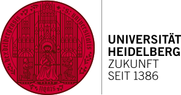
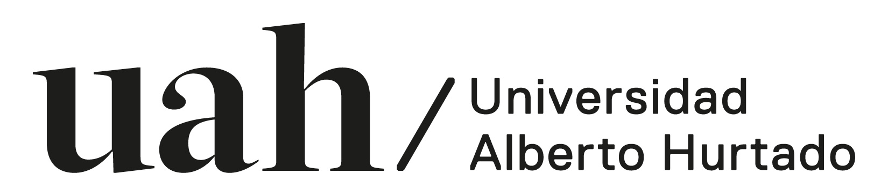

Perfil profesional
Cientista Político especializado en Relaciones Internacionales y Políticas Públicas, con experiencia en docencia universitaria, investigación aplicada y formulación de propuestas estratégicas. Su trayectoria integra gobernanza, política exterior, derecho del mar, sostenibilidad y cooperación internacional. Complementa su perfil con formación en inteligencia artificial aplicada a la creación de valor organizacional.
Áreas de especialización
Competencias clave
- Investigación y análisis estratégico
- Formulación de propuestas y planes
- Docencia universitaria
- Cooperación internacional
- Síntesis de evidencia y elaboración de minutas
- Comunicación académica y ejecutiva
Propuesta de valor
Perfil interdisciplinario orientado a conectar evidencia académica, análisis regulatorio y cooperación internacional con la formulación de soluciones para instituciones públicas, universidades, organizaciones de la sociedad civil y entidades vinculadas al desarrollo sostenible.
Experiencia profesional y académica
Asistente Ejecutivo
Gestiono los asuntos públicos y la relación con autoridades sectoriales, incluida la Subsecretaría de Agricultura, y hago seguimiento legislativo de los proyectos de ley del sector agropecuario con una plataforma de monitoreo de desarrollo propio. Coordino iniciativas conjuntas y documentos de posición, elaboro minutas, informes ejecutivos y correspondencia institucional para el Congreso Nacional, e impulso la automatización de procesos internos con herramientas de inteligencia artificial.
Profesor invitado · Pregrado en Ciencia Política
Cátedra sobre Teoría de las Relaciones Internacionales.
Docente de Magíster en Gobierno y Asuntos Públicos
Cátedra sobre política pública y la incidencia del conflicto social y político.
Colaborador en investigación y análisis de políticas públicas
Colaboración directa con la Dirección de la fundación y articulación con experiencia internacional vinculada a Mission Blue. Investigación sobre derecho del mar, gobernanza oceánica y creación de áreas marinas protegidas en Chile.
Lideré la redacción de una columna en el diario El País sobre el “multilateralismo y la vocación oceánica de Chile”, primer país en Sudamérica y el segundo en el mundo en ratificar el acuerdo marco del alta mar (enero de 2024).
Práctica profesional de Maestría
Formulación de un Plan Estratégico de Internacionalización para universidades iberoamericanas vinculadas al Diplomado en Políticas Públicas Globales.
Práctica profesional de Pregrado
Revisión exhaustiva de literatura y elaboración de minutas sobre ONU-Hábitat I, II y III, en relación con la política urbano-habitacional de Chile.
Formación académica
Magíster en Gobernanza de Riesgos y Recursos
Máster en Cooperación Internacional y Políticas Públicas para la Agenda 2030
Cientista Político, especialización en Relaciones Internacionales
Licenciado en Ciencia Política y Relaciones Internacionales
Bachiller en Ciencias Sociales



Diplomados
Universidad de Santiago de Chile
- Nuevo Sistema de Cooperación Internacional
- Modelos de Desarrollo y Sostenibilidad
- Políticas Públicas para la Agenda 2030
Instituto de Estudios Internacionales · U. de Chile
Diploma de Extensión en Estudios Internacionales
Cursos y talleres
Programa de Formación para el Fortalecimiento de las Capacidades en materia de Gobernanza de los Océanos
Curso de aprendizaje en línea (módulos básicos), con la Universidad de Melbourne, la División de Asuntos Oceánicos y Derecho del Mar de la ONU, la FAO, la Autoridad Internacional de los Fondos Marinos y el CDMO.
FAO e-Learning Academy
Comercio agrícola internacional: medidas no arancelarias y Acuerdos de la OMC.
Pontificia Universidad Católica de Chile
Taller de Métodos Mixtos.
Publicaciones e investigación
Publicaciones académicas
El rol de la diplomacia científica de Chile como socio de desarrollo de ASEAN: oportunidades para el posicionamiento del país como puente hacia el Sudeste Asiático
La política exterior azul: el proceso decisorio de la política pública de las áreas marinas protegidas de Chile, 2015-2023
La eficacia de la política exterior turquesa de Chile: ¿liderazgo efectivo o conceptual?
Investigación y contribuciones
Ministerio de Relaciones Exteriores de Chile
Investigación: La diplomacia científica de Chile como socio de desarrollo de ASEAN: desafíos y oportunidades para el país como puente hacia el Sudeste Asiático.
Jornada de difusión en el Museo de Historia Natural de Valparaíso
Seminario de difusión en la Pontificia Universidad Católica de Chile
Intergovernmental Oceanographic Commission of UNESCO
Exposición del póster “O’Higgins Seamount”.
Exposición de póster en Barcelona: Década de las Ciencias Oceánicas
Cátedra Internacional Alianza Pacífico
VII Simposio Internacional sobre Relaciones entre América Latina y Asia Pacífico (136 horas). Organizado por la Universidad del Pacífico, la Universidad Iberoamericana, la Universidad Alberto Hurtado y la Pontificia Universidad Javeriana.
Distinciones y adscripciones
Distinciones
Premio al Mérito Académico · 2023
Primer lugar de la generación de pregrado en Ciencia Política y Relaciones Internacionales.
Adscripciones
World Bank Group · 2024
Programa de formación para el fortalecimiento de capacidades en gobernanza de los océanos.
ECOP Chile · 2025
Red Nacional de Early Career Ocean Professionals, vinculada al Decenio de las Ciencias Oceánicas de las Naciones Unidas 2021-2030.